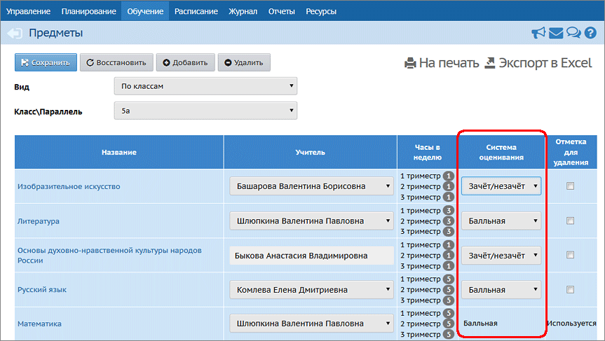

Образовательная организация вправе использовать не только балльную систему оценивания, но и систему оценивания «зачёт-незачёт», которая может быть введена, например:
| · | по некоторым предметам – таких как музыка, ИЗО, физкультура, ОРКСЭ (основы религиозной культуры и светской этики);
|
| · | в младшей школе даже по основным предметам;
|
| · | в старшей школе - для элективных курсов,
|
В системе «Сетевой Город. Образование» оценки «зачёт» и «незачёт» можно выставлять:
| · | в качестве итоговой отметки за учебный период (четверть/триместр/полугодие);
|
| · | при выставлении отметок за год – в графы «год» и «итог».
|
Настройка системы оценивания
Задать систему оценивания – балльная, зачёт-незачёт или "не оценивается" – можно независимо для каждого предмета в каждом классе (подгруппе). Это можно сделать на экране Обучение-> Предметы, выбрав конкретный класс:

Изменить систему оценивания можно только в том случае, если в данном классе (подгруппе) по данному предмету не выставлены итоговые отметки ни за один учебный период, а также в графах «год» и «итог». Возможность изменить систему оценивания не зависит от наличия текущих отметок.
Если для данного класса (подгруппы) по данному предмету выбрана система оценивания «зачёт-незачёт», то при выставлении итоговых отметок в графе «Оценка» можно выбрать одно из следующих значений: зачёт, незачёт, н/а, осв. .
Отчёты об успеваемости в случае зачётной системы
Все отчёты, которые выводят итоговые оценки, также могут выводить значения «зачёт» и «незачёт».
Кроме того, отчёты, подсчитывающие средний балл, а также %% успеваемости и качества знаний класса, подгруппы или ученика, учитывают при подсчёте:
| · | оценку «зачёт» – как «5» (точнее, как «Максимальную отметку» из настроек школы),
|
| · | оценку «незачёт» – как «2» (точнее, как «Минимальную отметку» из настроек школы).
|
Отчёты о потенциальных медалистах в случае зачётной системы
Отчёты о потенциальных медалистах учитывают при подсчёте:
| · | оценку «зачёт» – как «5» (соответственно, учащийся может считаться потенциальным медалистом),
|
| · | оценку «незачёт» – как «2» (соответственно, учащийся не будет включён в список потенциальных медалистов).
|
Выгрузка итоговых отметок для печати школьных аттестатов
При выгрузке файла для программы «ИвАттестат», по тем предметам, для которых задана зачётная система:
| · | вместо оценки «зачёт» в выгружаемый файл .csv автоматически передаётся отметка «5»;
|
| · | если же ученик по предмету имеет «незачёт», то по соответствующему предмету в файле .csv остаётся пустая ячейка (таким же образом, как и для н/а и осв.), и программа «ИвАттестат» автоматически исключает предмет из аттестата у этого ученика.
|